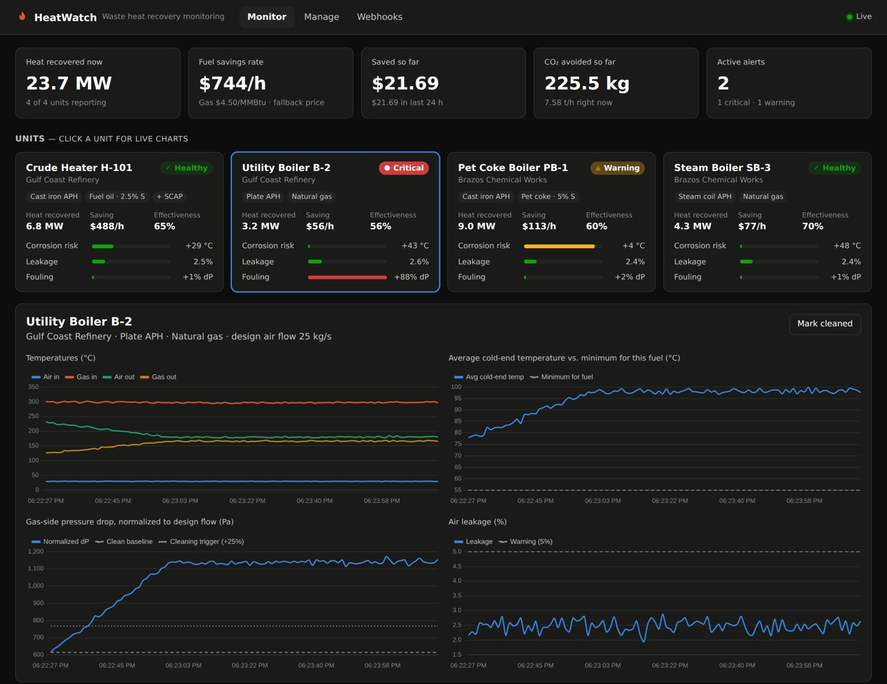
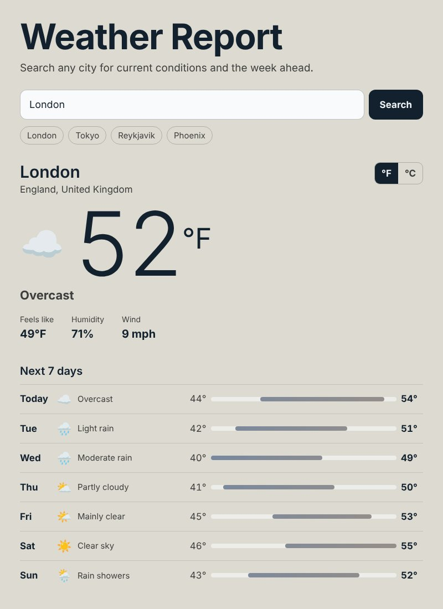

HeatWatch
Live monitoring, savings tracking and alerts for waste heat recovery air preheaters.
Python, FastAPI, SQLAlchemy, WebSockets, Chart.js, Docker, GitHub Actions
Plant managers see how much heat each preheater recovers right now, what that's worth in fuel dollars and CO₂, and get warned before the three classic failures get expensive: cold-end corrosion, air leakage and fouling. Sensor data is simulated by one thread per unit, and the hosted demo injects a new fault every few minutes so you can watch alerts fire and resolve.

- Telemetry pipeline with physics-checked validation, derived engineering metrics, and alert rules with hysteresis so borderline readings don't spam.
- Signed outbound webhooks (HMAC-SHA256) delivered by a worker pool with retries and backoff, plus a signed inbound webhook from a maintenance system with replay protection.
- Live gas prices from the EIA API and local weather from Open-Meteo, refreshed by a background thread into a thread-safe cache.
- A Python SDK, 59 tests including architecture tests that fail CI if a change breaks the layering, and a Docker image published on every push.
Hosted on a free server that sleeps when idle; the first visit can take up to a minute to wake it.
Weather Report
Search any city for current conditions and a 7-day forecast.
Kotlin, Jetpack Compose, MVVM, Coroutines and StateFlow, Retrofit, JUnit, MockWebServer; web version in plain JavaScript
A native Android app with a clean MVVM split: the Compose screen renders state, the ViewModel owns it and cancels stale searches, and a repository chains the geocoding and forecast APIs. Unit tests cover JSON parsing, mapping, the repository against a mock server, and every ViewModel state transition. The browser version keeps the same layers so you can try it without installing anything.

Smaller projects
- Go_Moves
- The board game Go on a 9×9 grid in the terminal, with coordinate input, move validation and two-player turns. Python.
- ASCII-Clock
- Renders any time as large ASCII digits, with 12/24-hour conversion and custom characters. Python.